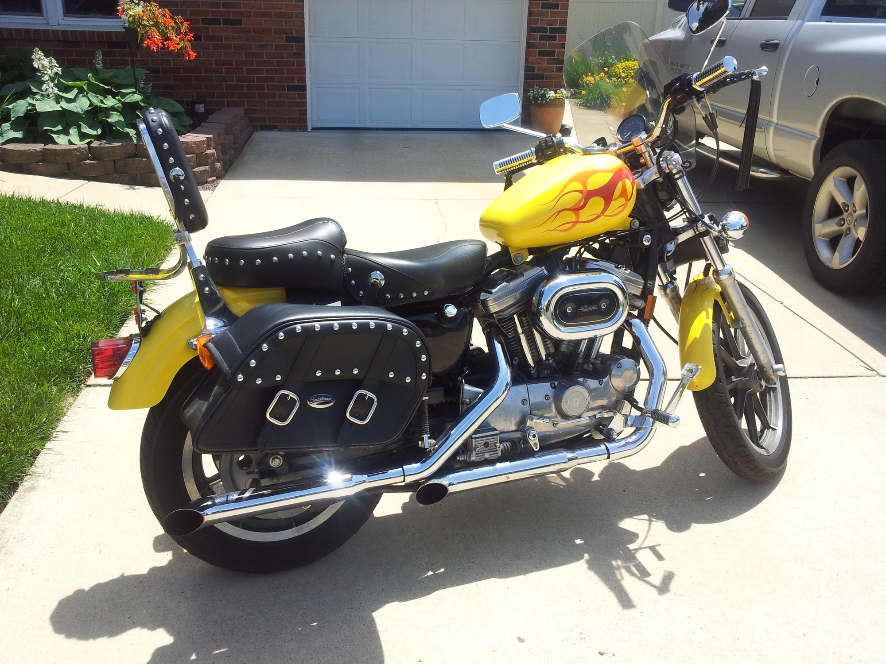

Two wheels, open roads.
A home for my bikes, motorcycle rallies, memorable roads, and practical resources for the ride.
My bikes
Two custom Harley-Davidsons and the roads that came with them.
First bike: custom Harley-Davidson 883
Photos from the 883 collection.



Second bike: black custom Harley-Davidson XL
Black paint and chrome on a custom XL.


Rallies near and far
Check organizers for current dates, locations, admission, and weather before making plans.
Pennsylvania & nearby
Lehigh Valley Bike Fest
Whitehall, Pennsylvania: a local gathering with bikes, vendors, music, and stunt shows. Confirm the next event with the host.
Event information →Gettysburg Bike Week
Gettysburg, Pennsylvania: bike shows, vendors, music, and riding in historic country.
Organizer →Americade
Lake George, New York: touring, guided rides, demos, and gatherings in the Adirondacks.
Organizer →Laconia Motorcycle Week
Lakes Region, New Hampshire: a long-running rally with scenic rides and events.
Organizer →Destination rallies
Noteworthy rides
Start close to the Lehigh Valley or plan a longer trip. Check road conditions, seasonal closures, weather, and park rules before riding.
Lower Delaware River
Follow the river on PA 611 and PA 32 through scenic Bucks and Northampton County communities.
NPS driving guide →Delaware Water Gap
Explore the river valley on US 209 and historic Old Mine Road; check for closures and uneven pavement.
NPS scenic drives →Blue Ridge Parkway
Mountain overlooks and sweeping curves through Virginia and North Carolina; allow time for stops and changing weather.
Ride guide →Tail of the Dragon & Virginia mountain roads
US 129 near Deals Gap and Virginia’s Back of the Dragon offer demanding curves; ride within your limits.
Touring guide →Rider resources
Wear protective gear, inspect your bike before departure, and never ride impaired.
Motorcycle Safety Foundation
Rider training for beginners and experienced riders.
Explore training →511PA
Check Pennsylvania traffic, incidents, and road conditions before setting out.
Check conditions →Blue Ridge Parkway closures
National Park Service updates for parkway travel planning.
Check closures →